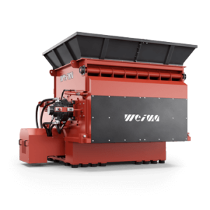

The ReduceAll S7 shredders are for the most extreme of applications. This
machine line boasts stability, functionality, consistent throughput, and
availability. A variety of sizes and options guarantees
customer-specific solutions for almost all applications. This line of
machines boasts extremely robust construction and almost endless
capabilities for the shredding of scrap. There are over 80 optional
features, making this a customizable shredding solution for almost any
application.
01
Achieve demanding throughput targets with Heavy Duty V rotor
The profiled V rotors of the S7 series have a diameter of 700
mm, with up to three rows of knives. All sizes are universally
applicable and guarantee maximum throughput rates at low wear
costs. The cutting knives can be reversed several times and are
available in sizes of 40, 60, 80 and 100 mm.
02
Film recycling in the US
At the Fiberon plant, two ReduceAll S7.25 lift-up shredders and a
S5.18 lift-up shredder shred film waste, which is then processed
into granulate with the help of an EREMA extrusion line.
Trouble-free shredding thanks to PLC control with automatic
reversing system
With just one central, high-quality Siemens PLC control cabinet,
you control not only the shredder but also the entire conveyor
system. If required, you can also control downstream secondary
shredders within the production line. Large touch displays
facilitate operation. An automatic reversing system ensures a
trouble-free shredding process.
04
Safe shredding of large-volume parts with extended hopper
attachment
Individual hopper extensions and enclosures with plastic
curtains are available to prevent materials from being thrown
from the hopper. In the heavy duty version, the feed hopper is
double-walled and thus effectively contributes to sound
insulation. For example this S7.30 lift-up shreds huge PE pipes.
The material is then granulated and fed to an extruder.
05
Sharp cuts guaranteed thanks to adjustable counter knives
A perfect cutting gap with sharp knives keeps the material
throughput at a constantly high level. For this reason, ReduceAll
rotor and counter knives can not only be turned - the counter
knives are also manually adjustable.
06
Highest precision with flexible materials with F rotor including
Vautid wear protection
The F rotors of the S7 series were designed for extreme demands.
An optional protective layer of Vautid counteracts increased
wear. Optional rotor cooling is available for particularly
temperature-sensitive materials
07
Shredders for the automotive industry
A ReduceAll S7.20 lift-up single-shaft shredder shreds production
waste from the automotive industry: plastic motor covers, rear
window shelving units, as well as large plastic drums. Once
shredded, these materials will be immediately granulated.
Particularly when shredding very thin materials such as films or
fibers, it is recommended to use a segmented floor, which guides
the ram even more precisely and prevents jamming. The shock
valve at the end of the hydraulic ram also absorbs shocks to the
ram, thus reducing wear.
09
Protected rotor bearings thanks to offset mounting from the
frame
ReduceAll shredders are known for their durability. This is also due
to the spherical roller bearings used for our rotors. The
bearings are mounted at a distance from the machine and protect
against contaminants and uncontrolled forces acting on the
rotor. It also facilitates regular maintenance.
10
Maintenance-friendly rotor access thanks to upward-swiveling
screen basket
The screen baskets of the S7 series can be swung upwards. This
allows free access to the rotor for convenient maintenance
without components getting in the way. Screens can be changed
just as easily. The screen basket can be equipped with round
hole screens in various diameters, zigzag, honeycomb, and kidney
screens - depending on the desired shredding result.
11
Powerful drive options: Hydraulic drive or electromechanical
drive
Hydraulic drives from Hägglunds / Bosch Rexroth are insensitive
to foreign material and are therefore extremely robust. Speed
and torque can be adjusted without causing current peaks. In
this way, high torques are achieved at low kW output. The speed
can be adjusted by means of a variable displacement pump.
Alternatively, a conventional electromechanical drive with ReduceAll
WAP gearbox can be installed.
12
Stronger. Wider. Tougher. with Heavy Duty options
The higher the requirements, the more robustly a shredder must
be built. For this reason, we use high-quality steel sidewalls
with 40 mm wall thickness for the S7 series. Together with the
extra large rotors as well as suitable drives, ReduceAll machines
are ready for anything.
13
Paper shredding on a grand scale
A ReduceAll S5.18 lift-up shredder shreds paper and cardboard. This
is the first step in paper recycling.
With the help of turbo hydraulics, the ram feeds the material to
be shredded to the rotor much faster. This increases the
throughput of your machine.
15
Less vibration with flexible set up with hard rubber feet
Despite their many tons of weight, shredders in these series
feature practical machine feet made of hard rubber. They have a
vibration-damping effect and reduce vibrations in the immediate
vicinity.
Technical data
Get to know our machines in detail.

S7.30 lift-up
S5.15 lift-up
S7.20 lift-up
S7.25 lift-up
Rotor Diameter (mm)
700*1
500*1
500*1
500*1
Rotor length (mm)
3000
1500
2000
2500
Rotor Speed (rpm)
80 - 120*2
80 - 120*2
80 - 120*2
80 - 120*2
Power (kW)
110 - 250*3
75 - 200*3
90 - 200*3
110 - 200*3
Rotor Knives
330*4
164*4
223*4
280*4
Available knife sizes (mm)
40|60|80|100
40|60
40|60
40|60
Fraction size (mm)
15 - 100
15 - 100
15 - 100
15 - 100
Infeed opening (mm)
3000 x 1930
1500 x 1880
2000 x 1880
2500 x 1880
Length (mm)
3,981
3,800
3,800
4,130
Width (mm)
4,285
3,050
3,500
3,000
Height (mm)
3,015
2,815
2,815
2,815
Height (approx. kg)
34,000
15,000
18,500
24,500
Wall thickness (mm)
40
40
40
40
*1 dependent on flight circle
*2 dependent on specific drive configuration
*3 dependent on drive technology
*4 dependent on machine configuration
*1 dependent on flight circle
*2 dependent on specific drive configuration
*3 dependent on drive technology
*4 dependent on machine configuration
*1 dependent on flight circle
*2 dependent on specific drive configuration
*3 dependent on drive technology
*4 dependent on machine configuration
*1 dependent on flight circle
*2 dependent on specific drive configuration
*3 dependent on drive technology
*4 dependent on machine configuration